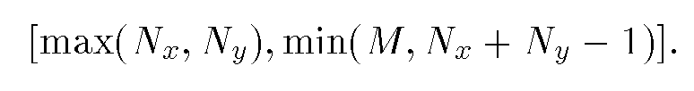
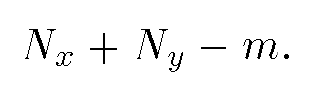

This scheme is a modification of the previous one. A restriction is imposed on the fill words so that each fill word can be turned into integer number of literal words. We see this as the essence of the alignment requirement. In the previous section, we reviewed three byte-aligned schemes. In each case, a fill is required to be multiple bytes in length. A naive definition of word-alignment may be taken as the fill seizes have to be integer number of words. Using a word contains 32 bits as example, we may require all fill words to represent multiple of 32 bits. Since each literal HRL word contains 32 useful bits, this causes bitwise logical operations between a fill word and a literal word to leave off an arbitrary number of excess bits. This will lead to the same problem that slows down the HRL scheme. To avoid this problem, all fill words need to have multiple of 31 bits. We call the HRL, scheme with this extra requirement the word-aligned hybrid run-length code, or WAH for short
Assuming a bit sequence is feed into a WAH bit vector one bit at a time, the incoming bits will be accumulated in the active word initially. This active word will always contain less than 31 useful bits. Once the active word is full, i.e., having 31 bits, we store it as a regular literal word unless these bits are part of a long fill. In order to be part of a long fill, all the bits in the active word must be the same and same as the preceding fill. This fill can appear either as a fill word or as a literal word. When it is a literal word, all the bits in the literal word must be the same and the same as the bits in the active word. The process of appending a full active word is captured in the following pseudo-code segment. The WAH bit vector will also have a STL vector container and an active word, similar to an HRL bit vector.
# Algorithm 5, Append a full active word to vec of a WAH bit vector
# (Operators << and >> indicate bitwise left and right shift)
if (vec isEmpty()):
vec.push_back(active.value)
elif (active.value == 0):
if (vec.back() == 0):
vec.back() = (1 << 31) + 62
elif (vec.back() >> 30 == 2 && ((vec.back( << 2) >> 2) < 2**30 - 31)):
vec.back() += 31
else:
vec.push_back(active.value)
elif (all 31 bits of active.value are one):
if (vec.back() = active.value)
vec.back() = (3 << 30 + 62)
elif (vec.back() >> 30 == 3 && ((vec.back() << 2) >> 2) < 2**30 -31)
vec.back() += 31
else:
vec.push_back(active.value)
This scheme may use more computer words than HRL to represent the same bit sequence. In particular, every fill word in this scheme is likely to be smaller than the corresponding fill word in the previous one, the bits not represented in the fill words will appear as parts of literal words. If a bit sequence is represented by only one fill word in the HRL code (plus a few bits in the active word), it is likely that the HRL fill word
Figure 13 shows a WAH bit vector. Compared with HRL, the fill run stored in the third word only represents 62 bits rather than 66 bits. The four bits not represented in the fill run are pushed to the next literal run and there are five bits in the active word, see the last two words. In this particular example, WAH and HRL use the same amount of space.
# Algorithm 6, Append a fill to the vector container vec of a WAH bit vector
# Let fillbit denote the fill bits and nBits denote the number of bits in the incoming fill.
# (Assuming active.nbits = 0)
if (vec is not empty()):
if (fillBit == 0):
if vec.back() == 0:
nBits += 31
vec.pop_back()
elif (vec.back() >> 30 == 2):
nBits += ((vec.back() << 2) >> 2)
vec.pop_back()
else:
if (vec.back() == ((2**31) -1)):
nBits += 31
vec.pop_back()
elif (vec.back() >> 30 == 3)
nBits += ((vec.back() << 2) >> 2)
vec.pop_back()
while (nBits > (2**30/31) * 31):
vec.push_bac(((2 + fillBit) << 30) + (2**30/31) * 31)
nBits -= (2*30/31) * 31
vec.push_back(((2 + fillBit) << 30) + nBits)
nBits = 0
The same process shown in Algorithm 3 can be used to perform bitwise logical operations on WAH bit vectors. One difference is that WAH, literal words are processed one at a time. This makes the number of iterations of the while loop in Algorithm 3 exactly equal to the number of code words generated as the result of the logical operations. In each iteration of the algorithm, either a literal word or a fill word is generated and needs to be appended to the vector container vec. The process of appending a literal and a fill word are described in Algorithm 5 and 6. When executing the two algorithms, the main cost is in executing the next if-tests. Since the two have similar if-tests, they should take about the same amount of time. To simplify the discussion on the complexity of the logical operations, we assume that it takes the same amount of time to append a literal word or a fill word to a list of regular code words in vec. It is easy to see that this assumption is applicable to most other compressed bit vector schemes except HRL and gzip.
The total time spent in a bitwise logical operation should be proportional to the number of iterations it goes through the while loop starting at line 5 of Algorithm 3. Let M be the maximum number of words it takes to represent any bit sequence containing the same number of bits as x.vec, let Nx be the actual number of code words in x.vec and Ny be the actual number of code words in y.vec. Since each iteration of Algorithm 3 at least consumes one code word from either x or y. The number of iterations is in the range of :

When x.vec and y.vec are known, it is easy to determine the actual number of iterations. Let's define nx(i) to be length of the bit sequence represented by x.vec[0] ... x.vec[i] and define ny(i) similarly. Compare all nx(i) against all ny(i). Every time there is a match, Algorithm 3 consumes two code words, one word from each operand. If there are m matches, the total number of iterations is :

Proposition 1 Given that the test bit sequences are generated randomly, if Nx + Ny is less than M, the number of matches m would be much smaller than Nx + Ny. Therefore, the total number of iterations is nearly Nx + Ny.
The above arguments show that a logical operation needs to invoke Algorithm 5 and 6 about Nx + Ny times. This is expected to be the most expensive part of the operation. The next time consuming part is to decode the code words of x and y. (The function should be similar to the decode function shown on line 30 of Algorithm 3.) Overakk, if x and y represent reasonably sparse bit sequences, we expect the logical operation time to be proportional to the total number of words in the two bit vectors. As the bit sequences become less compressible, the logical operation time shopuld approach a maximum value.